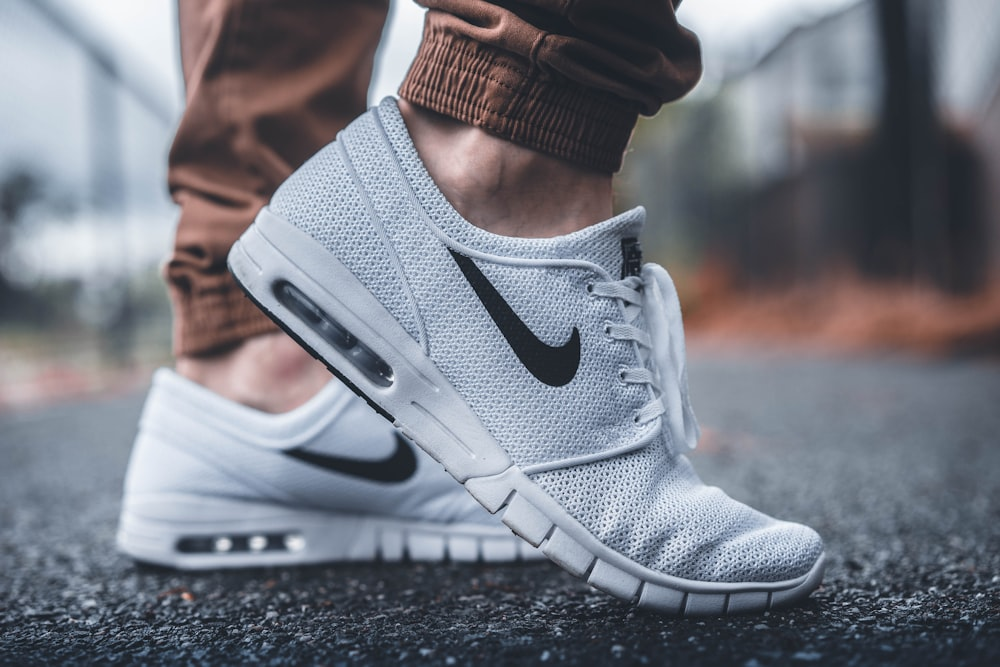

Graduated Compression Ergonomics: Improving Venous Circulation and Preventing Foot Fatigue

The human cardiovascular system faces an unrelenting gravitational challenge: returning deoxygenated blood and lymphatic fluid from the plantar extremities back up through the deep veins of the lower legs to the heart. For individuals who stand for prolonged shifts, desk workers who remain seated for hours, and long-distance endurance athletes, this hydrostatic pressure column leads to venous pooling, interstitial edema, and profound musculoskeletal fatigue. Graduated compression hosiery represents one of the most effective, non-invasive ergonomic interventions in modern wearable textile engineering.
The Physics of Graduated Pressure
True graduated compression delivers maximum external pressure at the narrowest circumference of the ankle (100%), progressively tapering to 70% at the mid-calf and 40% below the knee. This calculated pressure differential creates an upward fluid kinetic velocity gradient.
1. Hemodynamic Mechanics of the Calf Muscle Pump
Under normal active ambulation, the gastrocnemius and soleus muscles contract against deep calf veins, squeezing blood through one-way bicuspid venous valves toward the femoral vein. This biological mechanism is known as the peripheral heart or calf muscle pump.
However, when sedentary or standing statically, the calf muscle pump falls dormant. Gravitational hydrostatic pressure causes blood to pool in distal venules, leading to:
- Venous Stasis and Dilation: Elevated luminal pressure stretching vein walls and separating delicate valve leaflets, hindering efficient circulatory return.
- Microvascular Fluid Extravasation: Plasma leaking across capillary membranes into interstitial tissue spaces, causing visible ankle swelling and tissue fullness.
- Metabolite Stagnation: Accumulation of cellular metabolic byproducts, triggering heavy, aching leg sensations and delayed muscle recovery.
- Cutaneous Hypoxia: Reduced microvascular perfusion in the superficial dermis, leading to localized fatigue and skin sensitivity.

Figure 2.1: Biomechanical stride analysis demonstrating how graduated compression supports plantar fascia alignment and calf venous return.2. Mathematical Modeling: Applying Laplace's Law to Hosiery
In textile engineering, the external pressure applied to a limb is governed by Laplace's Law of Cylindrical Tension:
P = (T × 2π) / (C × W)
Where P is radial pressure in millimeters of mercury (mmHg), T is elastomeric yarn tension in centinewtons, C is limb circumference in centimeters, and W is knitting stitch course width. Because limb circumference naturally increases from the ankle to the calf, knitting tension must be mathematically modulated at every needle step to maintain a decreasing pressure gradient.
If a sock maintains uniform elasticity throughout its length, it will actually exert less pressure at the ankle and more pressure at the wider calf, creating a dangerous constriction ring that traps fluid in the foot. Premium circular knitting machines resolve this by dynamically adjusting the stitch cam depth and feed rate of the inlaid elastomeric thread during knitting.
In our atelier knitting process, electronic step-motors calibrate the tension of core Lycra filaments every 1.5 milliseconds, producing an unbroken logarithmic pressure gradient that guides blood upward without localized pinching.
| Compression Class | Pressure Range (mmHg) | Target User Application | Primary Physiological Benefit |
|---|---|---|---|
| Mild Everyday | 8 – 15 mmHg | Desk professionals, light travel, mild fatigue | Prevents evening ankle heaviness and light swelling |
| Moderate Ergonomic | 15 – 20 mmHg | Nurses, retail staff, runners, frequent flyers | Optimizes venous velocity and accelerates lactic clearance |
| Firm Performance | 20 – 30 mmHg | Marathon recovery, high-impact athletic regimens | Stabilizes muscle oscillation and minimizes post-effort soreness |
3. Athletic Performance and Post-Exercise Recovery Dynamics
During intense running or plyometric training, the impact shock of foot-strike sends vibrational waves through the gastrocnemius and tibialis anterior muscles. This repeated muscle oscillation causes microscopic myofibrillar microtrauma, contributing to Delayed Onset Muscle Soreness (DOMS).
Graduated compression socks provide structural mechanical containment that dampens radial muscle vibration by up to 28%. In clinical biomechanics trials, athletes wearing 15–20 mmHg compression socks demonstrated:
- Accelerated Blood Lactate Removal: Increased venous return velocity allows faster transport of metabolic byproducts to the liver and kidneys for clearance.
- Enhanced Proprioception: Tactile feedback across cutaneous mechanoreceptors improves neuromuscular joint positioning awareness at the ankle.
- Reduced Interstitial Swelling: Compression forces fluid back into the lymphatic capillary vessels, preventing structural joint stiffness.
- Stabilized Calcaneal Landing: Anatomical arch bands reduce medial-lateral heel wobble during rapid deceleration phases.
4. Long-Haul Travel and Occupational Ergonomics
In sedentary aircraft cabins or extended automobile journeys, cabin barometric pressure drops while travelers remain immobilized in cramped seating for hours. Blood flow in the deep popliteal veins slows significantly, increasing the risk of venous stasis and uncomfortable fluid accumulation.
Wearing moderate 15–20 mmHg graduated socks during flights exceeding four hours maintains baseline venous flow velocity comparable to light walking. For healthcare workers, chefs, teachers, and industrial technicians who stand on hard unyielding surfaces, compression hosiery works in synergy with ergonomic footwear to prevent end-of-day arch strain, plantar fascial tension, and calf exhaustion.
By stabilizing the superficial venous network, compression wear alleviates the sensation of heavy, throbbing legs after an 8 to 12-hour shift, promoting restorative circulation throughout the workday.
5. Fiber Engineering: Double-Covered Elastane and Core Longevity
Standard low-cost compression wear uses bare synthetic rubber or single-wrapped spandex threads. When exposed to sweat, body oils, and friction, bare elastane degrades rapidly, losing elasticity after just a dozen washes.
At SockEssentials, our graduated compression socks are constructed using double-covered Lycra filaments. In this advanced textile process, a high-tenacity core elastomeric yarn is wrapped in opposite directions by two protective spiral layers of GOTS-certified combed cotton or ultra-fine merino wool. This ensures that:
- The elastic core is completely shielded from chemical oxidation and UV degradation.
- Only natural, breathable, hypoallergenic natural fibers make direct contact with the skin.
- The sock maintains its calibrated millimetric pressure rating through over 100 industrial wash cycles.
- Fabric breathability remains uncompromised, preventing excessive heat accumulation around the calf.
6. Safe Usage Guidelines and Best Practices
To achieve optimal ergonomic benefits from graduated compression wear, adhere to the following recommendations:
- Proper Sizing by Ankle Circumference: Never choose compression socks based on shoe size alone. Always measure the narrowest point of the ankle and the widest part of the calf with a tape measure.
- Smooth Application: Gather the sock down to the heel pocket, place your foot inside, and smoothly unroll the fabric up the leg. Never fold down the top cuff, as double-folding doubles the local pressure and creates a restriction ring.
- Daytime Wear Protocol: Wear compression socks throughout active or standing hours. Remove them prior to sleeping, as horizontal resting position eliminates gravitational hydrostatic pressure.
- Gradual Adaptation: First-time wearers should begin with 4 to 6 hours of daily wear, gradually extending to full-day use as the lower extremity vascular system adapts to external support.
7. Frequently Asked Questions on Graduated Compression Hosiery
Can I sleep while wearing graduated compression socks?
No, compression socks are engineered specifically for upright or seated postures when gravitational forces impede venous return. In a horizontal sleeping position, external compression is unnecessary and may impede microvascular capillary flow.
How do I know what compression level (mmHg) I need?
For daily desk work, light walking, and mild fatigue, 8–15 mmHg is ideal. For prolonged standing (nursing, retail), long-distance flights, and athletic training, 15–20 mmHg is the gold standard ergonomic recommendation.
How often should compression socks be replaced?
With proper cold-water delicate laundering and air drying, double-covered elastane hosiery retains its calibrated pressure gradient for 6 to 9 months of daily wear.
Key Scientific Takeaways
- True graduated compression provides 100% pressure at the ankle, tapering to 70% calf and 40% below knee.
- Laplace's Law requires dynamic knitting tension modulation to prevent calf constriction rings.
- Dampening muscle oscillation during running reduces microtrauma and accelerates post-workout recovery.
- Double-covered Lycra yarns guarantee long-term pressure calibration without skin irritation.